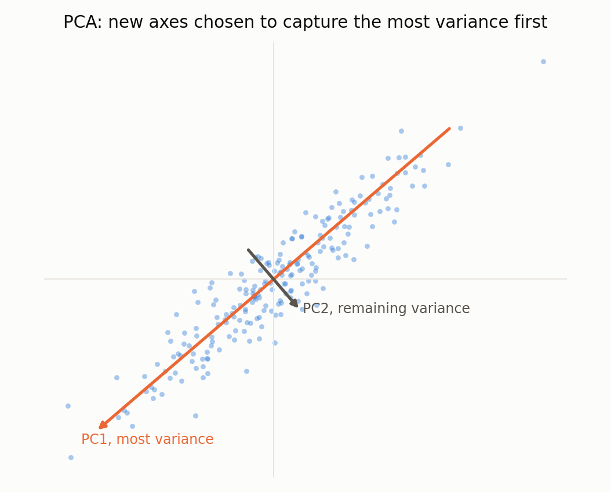
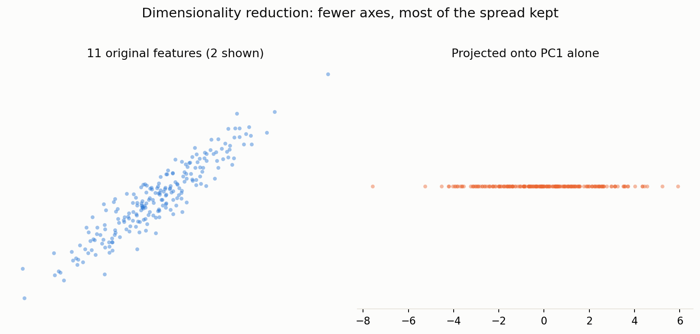
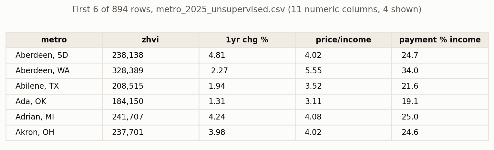
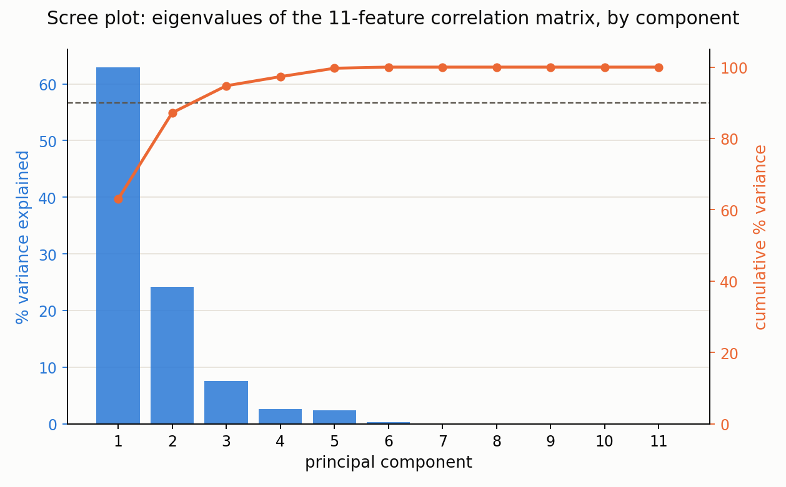
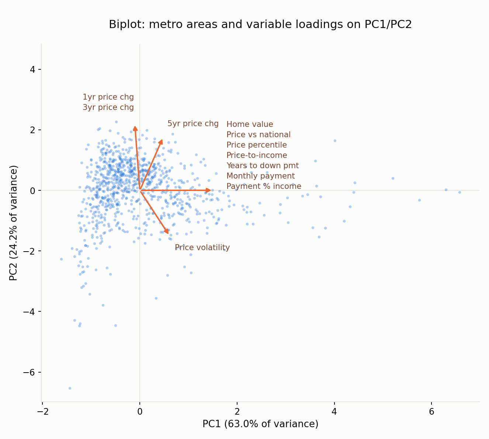

PCA
Reducing eleven affordability features to a handful that matter
Overview
Principal component analysis re-expresses a set of correlated numeric features as a smaller set of new, uncorrelated axes called principal components, each a linear combination of the original features. The first principal component is the single direction through the data that captures the most variance possible; the second is the direction, orthogonal to the first, that captures the most of what remains; and so on. Once the input features are standardized, the principal components are exactly the eigenvectors of the feature correlation matrix, and the amount of variance each component explains is its corresponding eigenvalue. When a small number of components together explain most of the total variance, the original features were carrying a lot of redundant information, and the data can be described almost as well in far fewer dimensions.


This project's eleven engineered features turn out to be a useful illustration of a common challenge with high-dimensional data: several of them are not really independent pieces of information. Price-to-income, monthly payment, years to a down payment and the price-versus-national ratio are all simple rescalings of the same home value figure against a national income or rate that does not vary across metros within a single year, so they sit close to collinear with one another. Highly collinear, high-dimensional data like this can make distance-based methods and models harder to interpret, because several columns are effectively voting on the same underlying signal rather than contributing independent information. PCA is one standard way to surface and correct for exactly this problem, since collinear features collapse onto the same principal component rather than inflating the apparent dimensionality of the data.
Data Prep
PCA requires the same kind of input as clustering: unlabeled, numeric data on comparable scales. The identical 894-metro, eleven-feature 2025 cross-section used for clustering is used here, standardized the same way. Reusing one prepared dataset for both unsupervised methods keeps the comparison between them fair, since neither method is given an advantage from different preprocessing.

metro_2025_unsupervised.csv, the same 894-metro by 11-feature table used for clustering (4 of 11 columns shown).
Full file on GitHub ↗Code
Python, using scikit-learn's PCA on the standardized features. explained_variance_
and components_ are exactly the eigenvalues and eigenvectors of the feature correlation matrix
once the inputs are standardized.
pca = PCA(n_components=11, random_state=42)
coords = pca.fit_transform(X)
eigenvalues = pca.explained_variance_ # eigenvalues of the correlation matrix
eigenvectors = pca.components_ # rows are eigenvectors (loadings)
explained = pca.explained_variance_ratio_
cum_explained = np.cumsum(explained)
⋮ # scree plot of eigenvalues, then a biplot of PC1/PC2 with variable loadings- prep_unsupervised_data.py : builds the standardized 894×11 table from the metro panel
- run_pca.py : eigen-decomposition, scree plot, biplot
Results
Eleven principal components were extracted (one per original feature), and their eigenvalues and loadings were inspected directly rather than only their plotted shape.

| Component | % variance | Cumulative % |
|---|---|---|
| PC1 | 63.0 | 63.0 |
| PC2 | 24.2 | 87.2 |
| PC3 | 7.6 | 94.8 |
| PC4 | 2.5 | 97.3 |
| PC5 | 2.4 | 99.7 |
| PC6–PC11 | <0.3 each | 100.0 |

| Feature | PC1 loading | PC2 loading |
|---|---|---|
| Home value | 0.378 | 0.001 |
| Price vs. national | 0.378 | 0.001 |
| Price-to-income | 0.378 | 0.001 |
| Years to down payment | 0.378 | 0.001 |
| Monthly payment | 0.378 | 0.001 |
| Payment % income | 0.378 | 0.001 |
| Price percentile | 0.326 | 0.060 |
| 5yr price change | 0.120 | 0.439 |
| Price volatility | 0.153 | -0.376 |
| 3yr price change | -0.003 | 0.599 |
| 1yr price change | -0.026 | 0.551 |
Conclusions
Three principal components recover most of the information in the original eleven features: the first two alone explain about 87.2 percent of the total variance (63.0 percent and 24.2 percent respectively), and a third component pushes the cumulative total to 94.8 percent. That is a large reduction, from eleven dimensions down to three, and it follows directly from the collinearity described above rather than showing that the underlying affordability problem is actually simple. The loadings on the first component are almost identical in size and sign across home value, price-to-income, monthly payment, price-versus-national and years to a down payment, confirming that PC1 is best read as a single generalized “expensiveness” axis built from several near-duplicate measurements of the same thing. The second component instead loads most heavily on the one-year, three-year and five-year price-growth variables, a genuinely separate axis: a metro can be expensive without having grown quickly recently, or the reverse. Read together, the two components suggest a metro's affordability situation is well described by two underlying ideas, how expensive it already is and how fast it has been getting more so, rather than needing all eleven engineered features to tell a complete story.